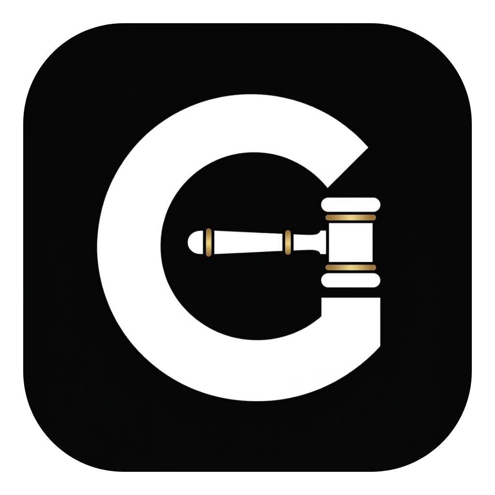

启动安全检查或资料库校验失败
程序已停止启动，不会加载未知本地服务或降级为空资料库。请关闭占用端口的程序，或重新下载安装包并核对 SHA256SUMS.txt。
Startup security or library verification failed. The app stopped instead of loading an unknown local service or an empty baseline.